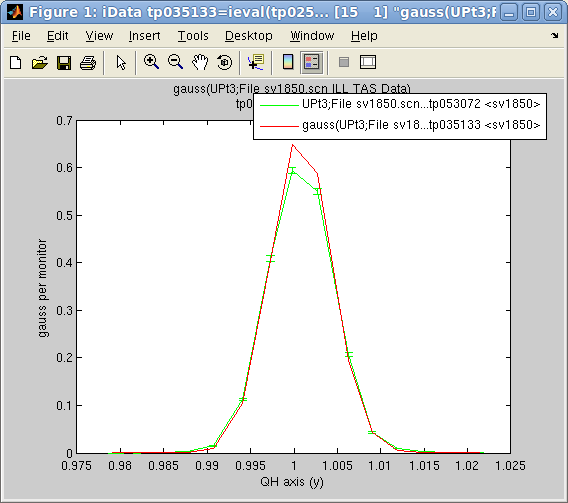
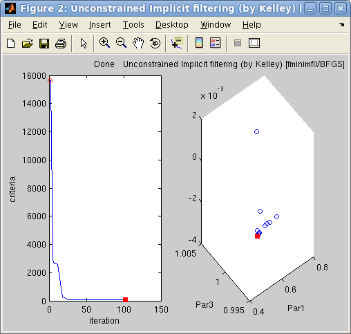

iFit: iData objects fitting
- Fitting
a
model
to
the
Data
- Getting most of the
fit results (4th output argument)
- Specifying/configuring the optimization
method
- Choosing an
optimization method
- Configuring the
optimization method (4th input argument)
- Monitoring the
performance of the optimization method and the fit process
- Model parameter constraints
- Fixed parameters
- Parameters varying
within limits
- Limiting parameter
change
-
Other constraints/restraints
- Additional arguments to the model
-
- Using constraints within the model
- Estimating the model parameter uncertainties
and the fit quality
- Building model functions
- Specifying the optimization criteria
- Issues when fitting
This documentation details the procedure that can be used to find
optimal parameter set from a model in order to match (fit) an iData
object Signal with axes.
fit: { vary vector
p ∈
ℜd
so that
distance(Signal, Model) is
minimal }
where
distance is the criteria
for the fit, which measures how far the model is from the data. There
is a number of possible distance definitions, detailed
below. You can refer to the
mathematical optimization definition.
Fitting
a
model
to
the
Data
The fits
function for iData and iFunc objects provides a simple
mean to find the best model parameters which fits a data set.
>> a=load(iData, [ ifitpath 'Data/sv1850.scn' ])
>> p=fits(a);
'Amplitude' 'Centre' 'HalfWidth' 'Background'
0.6786 1.0008 0.0035 0.0002
will fit the data Signal/Monitor
to a default 1D Gaussian function 'gauss',
starting
from
automatically
guessed
initial
model
parameters.
Of
course,
it
is
possible
to
chose explicitly
the model function, and the starting parameter set with e.g.
>> p=fits(a, 'gauss'); % specify model function to use: gauss, and use guessed parameters
>> p=fits(a, gauss, [ 0.5 1 0.01 0 ]); % specify the starting parameters for the model function
The two first arguments to fits are the data object (iData class) and the model object (iFunc class).
The result of the fits method
is the model parameter set that matches best the data. The number of
fit parameters is not limited.
A number of model functions is available from the Models
sub-library. The list of all
available fit functions can be obtained from the command:")
>> fits(iData); % or fits(iFunc)
Refer
to the section below in order to learn
how to define new fit models with the ifitmakefunc
tool, or directly with the iFunc class. This
latter supports many operators which allow to build complex models from
simpler ones, and store them into model objects (variables). You can get
information about a model by
inquiring its name. When a single input parameter is specified,
starting parameters
are guessed :
>> gauss
>> disp(gauss) % return information about the function
>> plot(gauss) % plot the function with a default parameter set and axes
>> gauss(p, x) % evaluate the function with parameters 'p' and axis 'x'
>> gauss(p) % same as above with guessed axes
>> g=gauss % g is now a variable of class iFunc
>> disp(g)
A fast way to define a new model and fit it to the data is to directly
execute, with p the parameter vector, and x,y,... the axes:
>> p=fits(a, 'p(1)*x+p(2)');
which will transparently create the model function, and then use it for the fit.
In
order
to
estimate
the
values
of
the
model
for
the
fit
parameters
onto
the iData object data set axes, use the model as argument to the object:
>> b= a(gauss, p) % evaluate the 'gauss' model onto the 'a' axes, with parameters 'p'
>> plot([ a b ]) % with parameters 'p', and plot both data and fit
In this case, the evaluated model is an iData object, which contains Parameter
and Model aliases that hold
the model parameters and description.
The fits function work with any data
and model dimensionality, and can also build multi-dimensional models
from lower dimensionality functions (e.g. making a 2D Gaussian from
multiplied orthogonal 1D Gaussians).
Getting most of the
fit results (4th output argument)
The fits method can return
additional arguments
>> [parameters,criteria,message,output]= fits(a, model, initial_parameters,...)
The input arguments allow to specify:
- a: an iData object, or
an array of objects
- model: the name of the
function or a function handle
- initial_parameters: a
set of starting parameters for the model. Using an empty set will trigger an automatic estimate (guess) of the
starting model parameters.
The returned arguments are similar to those returned by the
Matlab fminsearch non-linear
optimizer:
- parameters: is the best
fit parameter set for the model obtained during the optimization
- criteria: is the
criteria value (least square
χ by default - see below on how to
change this setting)
- message: is the final
optimization routine state (converged, failed, ...)
- output: is a structure
that holds all the information gathered during the fit procedure
The most interesting output argument result is the 4th one output,
which
provides significantly more information such as:
- output.parsBest: best
fit parameter set for the model
- output.criteriaBest: best criteria value for the model
- output.modelValue: Last model
evaluation (iData), that is a(model, parameters)
- output.algorithm: Algorithm/solver
used
(char)
- output.message: Message
which details the final state of the optimizer (char)
- output.funcCount: Number of
function evaluations performed during the fit (double)
- output.iterations: Number of
iterations performed during the fit (double)
- output.parsHistory: Parameter
set history during optimization (double array)
- output.criteriaHistory: Criteria
history during optimization (double vector/array)
- output.parsHistoryUncertainty: uncertainty
on fit parameters (half-width) obtained from the optimization history
(vector)
- output.parsHessianUncertainty: uncertainty
on fit parameters (half-width) obtained from the Hessian matrix, which
is extremely sensitive to noise. Prefer the output.parsHistoryUncertainty value
(vector)
- output.corrcoef: fit
correlation coefficient (closer to 1 indicates a good fit), as obtained from Matlab corrcoef.
- output.modelName: model
name
- output.modelInfo: model
information (structure)
- output.parsNames:
parameter names from the model
Last, the starting parameter 'guess' can also be specified as a
structure which fields contain numbers, or as a string with members separated with the ';' character, such as in the
following example:
>> p.Amplitude=0.5; p.Center=1; p.HalfWidth=0.0035; p.Background=1e-4; % optimize named parameters
>> fits(a, gauss, p) % The result is also returned as a structure.
>> fits(a,'gauss','Amplitude=0.5; Center=1; HalfWidth=0.0035; Background=1e-4') % create the structure above and fit...
All model named parameters must be specified.
Specifying/configuring the optimization
method
The iData fits
method is a wrapper to any of the Optimizers
optimizers,
with a specified fit criteria. Each optimizer can be
customized (e.g. the maximum
number of iterations, stop/convergence conditions, ...) with an options structure.
>> [parameters,criteria,message,output]= fits(a, model, initial_parameters, options)
Choosing an
optimization method
The Optimizers sub-library provides 21 different
optimization techniques. No doubt that choosing one at first sight is
difficult. We provide below a set of preferred optimizers, based on a
careful comparison explained in the Optimizers
documentation.
The process of choosing a sensible optimizer can be automated by using the fmin
optimizer (which is the default choice). The objective function is analyzed and a set of best
optimizers is determined, depending on the execution time, the number
of parameters, and the type of objective - noisy or continuous:
>> fits(a, model, initial_parameters, 'fmin')
When more than one optimizer is suitable, a random choice is performed,
with a weighting by the success ratio and the number of function calls
(optimization speed). Successive calls to fmin with the same problem to solve may result in different optimizers and solutions.
Optimizer
|
Description
|
Mean
Success
ratio
(%)
|
| fminpso |
Particle Swarm
Optimization |
97.9 / 84.1 |
| fminimfil |
Unconstrained Implicit filtering
|
93.5 / 53.8
|
| fminralg |
Shor R-algorithm (avoid when noisy) |
88.9 / 16.2
|
| fminhooke |
Hooke-Jeeves direct search |
97.1/ 56.3
|
| fmincmaes |
Evolution Strategy with
Covariance Matrix Adaptation |
88.9 / 71.2
|
| fminsimpsa |
simplex/simulated
annealing |
97.1 / 84.8
|
| fminsce |
shuffled complex evolution
|
95.7 / 85.2 |
| fminpowell |
Powell with Coggins line search
|
99.2 / 51.7 |
Table
1:
A
selection
among
the
most
efficient
and
fast
optimization
methods. The two success ratio are given for continuous and noisy functions resp.
The choice of the optimizer is done through a 4th input argument options
to fits (see below).
The list of all available optimizer
methods can be obtained from the command:
>> fits(iData)
Configuring the
optimization method (4th input argument)
In order to use these optimizers, one just has to specify their names
as
a fits input argument, e.g. options='fminimfil' :
>> [parameters,criteria,message,output]= fits(a, model, initial_parameters, 'fminimfil')
will select the Unconstrained
Implicit filtering coupled with BFGS fminimfil
optimizer to perform the fit. The default optimizer configuration will
be used, as obtained from the optimset
function, or from the method itself with 'defaults' as parameter. This
latter call (i.e. not with optimset) provides more informations:
>> options=fminimfil('defaults') % get the default optimizer configuration parameters
The optimizer configuration is
a structure which members enable to tune the behavior of the
optimization process. Each of the fields can be changed, e.g.
>> a=load(iData, [ ifitpath 'Data/sv1850.scn' ])
>> options=fminimfil('defaults')
>> options.TolFun=0.01;
>> p=fits(a, model, [], options); % fit with the customized options, and guessed starting parameters
In addition to the default optimset
structure fields, the iData fits
and the Optimizers optimizers use
additional members in the structure:
- options.Display: Level
of display [ off | iter | notify | final ]. Default is 'off'
- options.MaxFunEvals: Maximum number of
function evaluations allowed
- options.MaxIter: Maximum number of
iterations allowed
- options.TolFun: Termination tolerance on
the function value (absolute value or change). Can be specified in '%x' for a relative value.
- options.TolX: Termination tolerance on
parameter change. Can be specified in '%x' for a relative value.
- options.OutputFcn: Name of an output
function (see below). You may use 'fminplot', which is
provided in Optimizers.
This function should have the syntax fminplot(pars,
optimValues, state).
- options.FunValCheck: Check for invalid
function/model values, such as NaN or complex and abort.
- options.algorithm: is a description of the
optimization method (solver)
- options.optimizer: is the name of the
optimization function (solver)
- options.criteria: the
criteria to use with syntax criteria(Signal,
Error, Model). The default is least-square error (see below).
- options.Diagnostics: when set to 'on' or 1, returns the correlation coefficient and Hessian matrix
- and more, depending on the optimizer method and implementation
The options can also be entered as a single string such as in :
>> p=fits(a, model, [], 'optimizer=fminimfil; Display=iter; OutputFcn=fminplot; TolFun=0.01;');
which avoids creating a structure.
Monitoring the
performance of the optimization method and the fit process
In order to follow the optimization process, you may define a call to a
user function at each optimization iteration. A default plotting
facility has been implemented as the fminplot
function:
>> a=load(iData, [ ifitpath 'Data/sv1850.scn' ])
>> options=fminimfil('defaults')
>> options.OutputFcn='fminplot';
>> p=fits(a, gauss, [], options)
p =
0.6263 1.0008 -0.0037 0.0002
>> b = a(gauss, p)
>> figure; plot([ a b ])

Left: The
options.OutputFcn='fminplot' window
on
the
right,
showing
the
criteria
evolution
with
the
optimization
iteration
and
up
to the 3 first fit parameters. The
red
dot indicates the
current/final parameter set and criteria.
Right: The
final fit result on the left.
Also, as explained
above, it is possible
to obtain, on optimization completion, the whole criteria, and
parameter set history, as a function of iterations/criteria evaluations.
>> [p,criteria,message,output]= fits(a, gauss, [], options)
>> output.parsHistory
>> output.criteriaHistory
The monitoring window above can be re-displayed with:
>> fminplot(output);
Model parameter constraints
In many cases, the model parameters are to be constrained. Some optimization specialists call these restraints, that is parameter values constraints. This
includes some fixed values, or bounds within which parameters should be
restricted. This is given to the fits
method by mean of a 5th input
argument constraints
:
>> [parameters,criteria,message,output]= fits(a, model, initial_parameters, options, constraints)
In short, the constraints is a structure with the following members,
which should all have the same length as the model parameter vector:
- constraints.fixed: 1
for fixed parameter, 0 for free parameters
- constraints.min: the
minimum value for each parameter. -Inf
is supported. NaN can be
used.
- constraints.max: the
maximum value for each parameter. +Inf
is supported. NaN can be
used.
- constraints.steps: the
maximum change between iterations for each parameter. +Inf is supported.
- constraints.eval: any other expression to evaluate, returning a modified parameter vector 'p'
All these constraints may be used simultaneously.
The constraints input argument can also be entered as a character string, like the input parameters and options :
constraints='min=[0 0 0 0]; max=[1 10 3 0.1]; eval=p(4)=0';
As constraints apply on the iFunc model, it is possible to manipulate
all constraints using the object syntax and methods, as explained below.
Fixed parameters
To fix some of the model parameters to their starting value, you just
need to define constraints as
a vector with 0 for free parameters, and 1 for fixed parameters, e.g. :
>> a=load(iData, [ ifitpath 'Data/sv1850.scn' ])
>> p=fits(a, gauss, [], 'fminimfil', [ 1 0 0 0 ])
** Minimization performed on parameters:
'Amplitude' 'Centre' 'HalfWidth' 'Background'
0.5936 0.9998 0.0018 0.0050
p =
0.5936 1.0008 -0.0037 0.0002
will fix the first model parameter, which is here the Amplitude. This parameter name
can be checked
by simply entering the name of the model, which returns some
information structure :
>> disp(gauss)
ans = iFunc 1D model:
Expression: @(p,x)p(1)*exp(-0.5*((x-p(2))/p(3)).^2)+p(4)
Description: Single 1D Gaussian model
Tag: 'iF420775'
Date: '17-Jul-2012 15:50:11'
Name: 'Gaussian (1D) [gauss]'
Parameters: {'Amplitude' 'Centre' 'HalfWidth' 'Background'}
Guess: [function_handle]
Dimension: 1
ParameterValues: []
UserData: ''
Parameters:
p( 1)= Amplitude
p( 2)= Centre
p( 3)= HalfWidth
p( 4)= Background
A similar behavior is obtained when setting constraints as a structure
with a fixed member :
>> constraints.fixed = [ 1 0 0 0 ];
>> p=fits(a, gauss, [], 'fminimfil', constraints);
The constraints.fixed vector should
have the same length as the model parameter vector.
Once the iFunc model object has been instantiated, it is possible to fix/free its parameters with the lock/munlock methods, or more explicitly:
>> f=gauss; % create a Gaussian model
>> f.Amplitude = 'fix'; % fix its Amplitude. 'free' would free it
>> mlock(f, 'Amplitude') % same as above. munlock would free it.
Parameters varying
within limits
If one needs to restrict the exploration range of parameters, it is
possible to define the lower and upper bounds of the model parameters.
This can be done by setting the 5th fits
argument to the lower bounds lb,
and the 6th to the upper ub,
e.g. :
>> a=load(iData, [ ifitpath 'Data/sv1850.scn' ])
>> p=fits(a, 'gauss', [], 'fminimfil', [ 0.5 0.8 0 0 ], [ 1 1.2 1 1 ])
lb ub
A similar behavior is obtained by setting constraints as a structure
with members min and max :
>> constraints.min = [ 0.5 0.8 0 0 ];
>> constraints.max = [ 1 1.2 1 1 ];
>> p=fits(a, 'gauss', [], 'fminimfil', constraints);
The constraints min and max vectors
should have the same length as the model parameter vector.
Once the iFunc model object has been instantiated, it is possible to bound its parameters with the xlim method, or more explicitly:
>> f=gauss; % create a Gaussian model
>> f.Amplitude = [ 0 10 ]; % bound Amplitude between 0 and 10
>> xlim(f, 'Amplitude', [0 10]) % same as above
Limiting parameter
change
Last, it is possible to restrict the change rate of parameters by
assigning the constraints.steps
field to a vector. Each non-zero value then specifies the absolute
change that the corresponding parameter can vary between two optimizer
iterations.
In short, the constraints structure can have the following members,
which all should have the same length as the model parameter vector:
- constraints.fixed: 1
for fixed parameter, 0 for free parameters
- constraints.min: the
minimum value for each parameter. -Inf is supported.
- constraints.max: the
maximum value for each parameter. +Inf is supported.
- constraints.steps: the
maximum change between iterations for each parameter. +Inf is supported.
Other constraints/restraints
The constraints.eval member can be used to specify any other constraint/restraint by mean of
- either an expression making use of 'p', 'constraints',' and
'options', and returning the modified 'p' values (this expression is
evaluated) ;
- or a function handle of 'p', returning modified 'p' values.
For instance one could use constraints.eval='p(3)=p(1);'.
All these constraints may be used simultaneously.
The constraints input argument can also be entered as a character string, like the input parameters and options :
constraints='min=[0 0 0 0]; max=[1 10 3 0.1]; eval=p(4)=0';
NaN values in these constraints are ignored (the corresponding parameters are not constrained).
Once the iFunc model object has been instantiated, it is possible to restraint its parameters explicitly with expressions:
>> f=gauss; % create a Gaussian model
>> f.Amplitude = 'abs(p(1))'; % set Amplitude as its absolute value (Amplitude is p(1), as listed from disp(f))
>> f.Amplitude = 'abs("Amplitude")'; % same as above, double-quoting requests parameter name search in model
>> f.Amplitude = '"Amplitude" - "Background"'; % it is possible to use any parameter in expressions
Additional arguments to the model
When defining a model with n parameters and rank m (that is m axes), any fit process will optimize the n parameters by evaluating the model on the m axes.
If you need to use additional arguments to the model, which are fixed
during a fit/optimization, you can access them from the 'varargin'
variable in the Expression and Constraints. varargin{1} is the first additional argument, varargin{2} the second...
>> f=gauss;
>> disp(f)
f = iFunc 1D model:
Expression: signal = feval(@(p,x)p(1)*exp(-0.5*((x-p(2))/p(3)).^2)+p(4), p, x);
Description: Single 1D Gaussian model
Tag: 'iF457990'
Date: '16-Sep-2013 10:03:45'
Name: 'Gaussian (1D) [gauss]'
Parameters: {'Amplitude' 'Centre' 'HalfWidth' 'Background'}
Guess: @(x,s)[NaN,m1(x,s-min(s(:))),m2(x,s-min(s(:))),NaN]
Constraint: [1x1 struct]
Dimension: 1
ParameterValues: []
UserData: ''
Parameters (4):
p( 1)= Amplitude
p( 2)= Centre
p( 3)= HalfWidth
p( 4)= Background
>> f([1 2 3 4], 1:10) % evaluate with parameters p=[1 2 3 4] and axis x=1:10
ans =
4.9460 5.0000 4.9460 4.8007 4.6065 4.4111 4.2494 4.1353 4.0657 4.0286
>> f.Constraint.eval='disp(varargin)'; % add a constraint to be evaluated, using additional arguments
>> f([1 2 3 4], 1:10, 'eee') % evaluate again, with additional arguments
'eee' <-- here is displayed 'varargin' when evaluating Constraint.eval
ans =
4.9460 5.0000 4.9460 4.8007 4.6065 4.4111 4.2494 4.1353 4.0657 4.0286
>> f.Expression=@(p,x, varargin)p(1)*exp(-0.5*((x-p(2))/p(3)).^2)+p(4)+varargin{:}
>> f([1 2 3 4], 1:10, 1)
[1] <-- here is displayed 'varargin' when evaluating Constraint.eval
ans = <-- and we add it the the result as specified in the new Expression
5.9460 6.0000 5.9460 5.8007 5.6065 5.4111 5.2494 5.1353 5.0657 5.0286
Using constraints within the model
It may be easier to store constraints directly within the model used
during the fit. The main advantage is that constraints can be directly
related to the name of the model parameters.
To set a constraint on a model parameter, define the 'constraint' input
argument when calling fits or set the constraint directly on the model
parameters with:
>> model.parameter='fix' % to lock its value during a fit process
>> model.parameter='clear' % to unlock value during a fit process
>> model.parameter=[min max] % to bound value
>> model.parameter=[nan nan] % to remove bound constraint
>> model.parameter='' % to remove all constraints on 'parameter'
>> model.parameter='expression' % to set the parameter from an expression
>> model.Constraint='' % to remove all constraints
>> model.Constraint = 0; % to unlock/free all Parameters during a fit process
>> model.Constraint = 1; % to lock/fix all Parameters during a fit process
Any parameter name surrounded by double
quotes, e.g. "Amplitude", are replaced by their corresponding p(n) value in an expression used for setting a parameter value (cross-constraints). For instance
>> f=gauss; % create a Gaussian model
>> f.Amplitude = 'fix'; % fix its Amplitude
>> f.Background = [0 1e-4]; % bound its background
>> f.Width = 'p(1)/1000'; % use an expression referring to p(1)/1000 value
>> f.Width = '"Amplitude"/1000'; % same as above with direct naming as p(1)=Amplitude
Alternatively, you can use the mlock, munlock and xlim methods:
>> mlock(f, {'Amplitude','Background'}) % fix these 2 parameters, same as setting parameters to 'fix'
>> munlock(f, 'Background') % unlock that parameter, same as f.Background='clear'
>> xlim(f, 'Background', [0 1e-3]) % force parameter within range, same as f.Background=[min max]
>> xlim(f, 'Background', []) % remove limits constraint
Last, you can fix/clear/bound parameters based on a regular expression search such as:
>> mlock(f, regexp(f.Parameters, 'Amplitude|Background'})
where we have used the '|' OR operator.
To list parameters which are fixed, free and bounded, use:
>> mlock(f)
>> munlock(f)
>> xlim(f)
which return the number of parameters in each category.Estimating the model parameter uncertainties
and the fit quality
Some theoretical notes about the goodness of fit are indicated in
the Optimizers help. The
uncertainty on the fit parameters can be obtained from output.parsHistoryUncertainty and output.parsHessianUncertainty. Additionally,
the output.parsHessianCorrelation
indicates the cross-correlations between parameters (off-diagonal
values larger that 0.7 indicate cross-correlated parameters).
The Hessian statistics are explicitly computed when options.Diagnostics='on', or when the time required for computation does not exceed about a minute.
The parameter uncertainties are displayed when options.Display is set to 'final' or 'iter'.
The
Hessian method is very sensitive to noise in the objective function.
All these Hessian final computations (which may take time) can be
skipped when using options.Diagnostics='off'.
The fit quality can be assessed from the output.corrcoef returned value
which goes from 0 (very bad fit) to 1 (perfect fit). A value higher
than 0.95 is usually very good.
Building model functions
 The
ifitmakefunc
tool has been designed to automatically create model functions from
either a single expression, or a more detailed description. Refer to
the Models/Model Builder.
The
ifitmakefunc
tool has been designed to automatically create model functions from
either a single expression, or a more detailed description. Refer to
the Models/Model Builder.
>> h=ifitmakefunc; % pops-up a dialog to define the new fit function/model
>> h=iFunc('p(1)*exp( (x-p(2))/p(3) )'); % directly create an iFunc model
>> fits(a, h)
The resulting model has the ability to identify itself ('identify', provide
detailed information), compute automatic starting parameters ('guess'), display
itself ('plot'), and
evaluate its value of course. It can be directly used with
fits, either with their name, or
their function handle.
It is even possible to directly call the fitting method and create the
model function on the fly, which makes the fit much easier for simple
functions that can be written as a single expression:
>> fits(a, 'p(1)*exp( (x-p(2))/p(3) )'); % does the same as above, in a single command
To assemble existing functions into new ones, you may use e.g. :
>> h=gauss+lorz; h.Constraint = 'p(8)=0;';
which creates a new function which is the sum of a Gaussian and a
Lorentzian. The second redundant Lorentzian Background p(8) parameter
is forced to 0 so that it does not correlate with the Gaussian
Background p(4). Other
function information/parameter names (here not specified) are
guessed/defaulted.
It is even possible to convolute and correlate functions and data sets
as new function definitions. Refer to the Models page.
In case the model requires additional arguments, just pass them to the fits method (arguments above the 5th)
>> p=fits(a, model, [ 0.5 1 0.01 0 ],'','',additional_arguments);
assumes the model function has syntax
model(p, axes from object, additional_arguments)
Specifying the optimization criteria
The default optimization criteria is the 'least square error':
χ = ∑ (Signal-Model).
When the Monitor is defined (see iData
definition), the Signal is normalized, so that
χ = ∑
(Signal/Monitor-Model).
When the Error on the Signal is available, the weighted criteria reads
χ = ∑
(Signal/Monitor-Model)/Error.
The options.criteria can be defined as the name of a criteria function
with syntax criteria(Signal, Error,
Model) where all arguments should have the same dimension, and
the default criteria is:
options.criteria
=
'least_square';
% criteria definition
The Signal will be normalized to the Monitor prior to calling the
criteria. The Error is used as weight.
The criteria is then normalized to the number of degrees of freedom by dividing it by
χ ← χ /(number_of_data_points_in_the_Signal - number_of_parameters -1)
The following pre-defined functions can be used as criteria:
| criteria(Signal, Error,
Model) |
Expression
|
comment
|
least_square
|
(|Signal-Model|/Error)2
|
non-robust. Ref.
|
least_absolute
|
|Signal-Model|/Error
|
robust. Ref.
|
least_median
|
median(|Signal-Model|/Error)
|
robust, scalar. Ref.
|
least_max
|
max(|Signal-Model|/Error)
|
non-robust, scalar. Ref.
|
max_likelihood
|
(|Signal-Model|/σ).^2 + 1/2 log(2πσ) |
Ref. Minimize -log(L)
|
max_corrcoef
|
1-corrcoef(Signal, Model)
|
|
Issues when fitting
If you can not obtain a good fit, you can think about the following things to do:
- redefine the data set Error, which is used as weighting factor in the evaluation of the criteria. The sqrt(Signal) (default) may not be suited. Try setting a.Error=1 ;
- change the criteria definition (see above). The least square (default) may not be suited to the Signal ; you may try the Maximum likelihood.
- try with a specific optimizer. The default fmin optimizer, that makes a guess of a suitable routine may do a wrong guess ;
- if the chosen optimizer is heuristic (that is non deterministic),
such as swarm and annealing methods, repeat the fit. The solution will
be different ;
- set constraints to model parameters,
so that they remain reasonable. In practice, set the minimum and
maximum range values. Use Nan or Inf not to constraint a parameter ;
- set the starting parameter set to a sensible guess, rather than relying on the automatic guess.
Good luck !
E.
Farhi - iFit/iData fitting -
$Date: 2013-09-16 10:19:18 +0200 (Mon, 16 Sep 2013) $ $Revision: 1163 $
- back to
Main iFit Page 
{kind=link}
{kind=link}